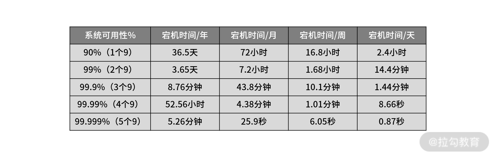
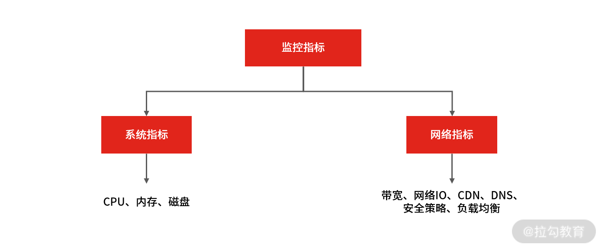
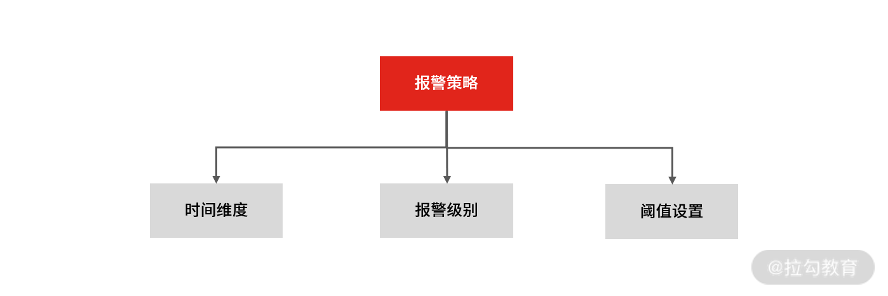
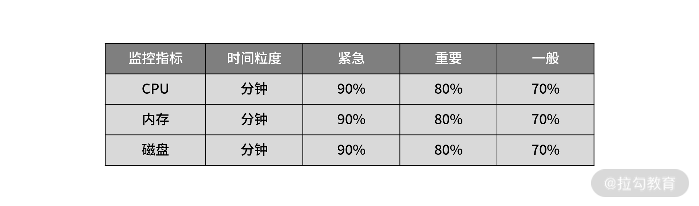
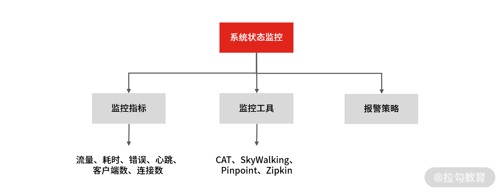
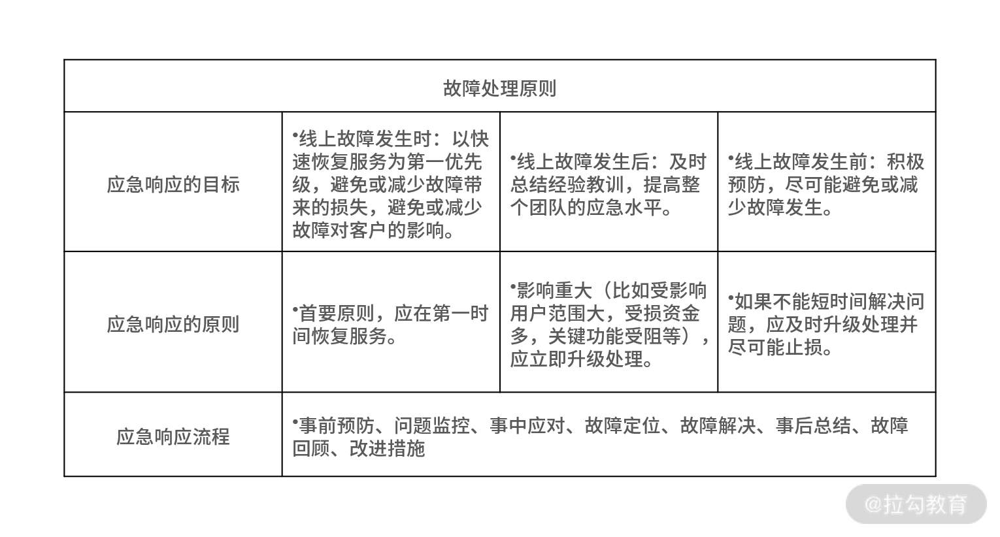
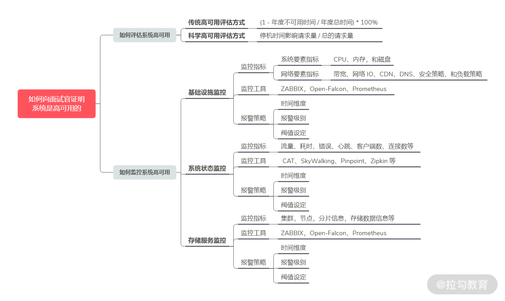

- 00 开篇词 中高级研发面试，逃不开架构设计这一环.md.html
- 01 研发工程师想提升面试竞争力，该具备这三个技术认知.md.html
- 02 研发工程师如何用架构师视角回答架构设计方案？.md.html
- 03 面试官如何考察与 CAP 有关的分布式理论？.md.html
- 04 亿级商品存储下，如何深度回答分布式系统的原理性问题？.md.html
- 05 海量并发场景下，如何回答分布式事务一致性问题？.md.html
- 06 分布式系统中，如何回答锁的实现原理？.md.html
- 07 RPC：如何在面试中展现出“造轮子”的能力？.md.html
- 08 MQ：如何回答消息队列的丢失、重复与积压问题.md.html
- 08 案例串联 如何让系统抗住双十一的预约抢购活动？.md.html
- 09 如何回答 MySQL 的索引原理与优化问题？.md.html
- 10 如何回答 MySQL 的事务隔离级别和锁的机制？.md.html
- 11 读多写少：MySQL 如何优化数据查询方案？.md.html
- 12 写多读少：MySQL 如何优化数据存储方案？.md.html
- 13 缓存原理：应对面试你要掌握 Redis 哪些原理？.md.html
- 14 缓存策略：面试中如何回答缓存穿透、雪崩等问题？.md.html
- 15 如何向面试官证明你做的系统是高可用的？.md.html
- 16 如何从架构师角度回答系统容错、降级等高可用问题？.md.html
- 17 如何向面试官证明你做的系统是高性能的？.md.html
- 18 如何从架构师角度回答怎么应对千万级流量的问题？.md.html
- 19 彩蛋 互联网架构设计面试，你需要掌握的知识体系.md.html
- 结束语 程序员的道、术、势.md.html
15 如何向面试官证明你做的系统是高可用的？
我们已经用了五个模块分别讲了架构原理、分布式技术、中间件、数据库，以及缓存，这些都是面试中必考的技术领域和技术点，又因为我们处在大数据和互联网时代，所以高可用高性能这些非功能性需求的考察，也是你需要了解的，所以在最后一个模块，我会带你打卡高可用高性能的架构设计面试实战。
我在 01 讲中说过，高级研发工程师和架构师的区别不在于掌握了多少技术，而在于你所能驾驭系统的边界。这其实也反映了一个研发工程师的成长历程，起初独立负责一个功能，然后负责一个系统模块，再负责一个系统，最后负责多个系统或业务条线。
但是不管你在哪个阶段，有一个问题你肯定逃不开：怎么证明自己负责的系统是高可用的？因为任何一个系统架构初衷，最基本的诉求是要保证系统的稳定性和可用性，然后才是基于高流量的场景下，保证系统的并发承载能力。
案例背景
一般来讲，面试官在考察你系统架构的设计能力时，经常会让你说一下你在上一家公司是怎么设计系统架构的，以此了解你的设计能力和思路。
而你在讲解架构设计时，也是在向面试官逐步证明，自己负责的系统是如何做到高可用的。这会涉及一个公认的论证——SLA。服务等级协议（Service-Level Agreement，SLA）最根本的形式是协议双方（服务提供者和用户）签订的一个合约或协议。这个合约规范了双方的商务关系或部分商务关系。简单点儿说，你可以认为 SLA 是服务可用性一个重要衡量指标。
业界一般用几个 9 的 SLA 服务等级来衡量互联网应用的可用性。比如京东的可用性是 4 个 9（京东的服务 99.99% 可用）：京东的服务要保证在所有的运行时间里只有 0.01% 不可用，也就是说一年大概有 52.6 分钟不可用，这个 99.99% 就叫作系统的可用性指标。
52.6 分钟是怎么计算出来的呢？
SLA 的计算公式
从公式中可以看出， SLA 等于 4 个 9，也就是可用时长达到了 99.99% ，不可用时长则为是0.01%，一年是 365 天， 8760 个小时，一年的不可用时长就是 52.6 分钟，那么：
- SLA 等于 3 个 9，就相当于一年不可用时长等于 526 分钟；
- SLA 等于 5 个 9，就相当于一年不可用时长等于 5.26 分钟。
可以发现，用 SLA 等于 4 个9 作为参照物，少个 9 相当于小数点往后移一位，多个 9 相当于小数点往前移一位（我把系统可用性指标总结成一张表格）。

系统可用性指标
那么问题就来了： 既然 SLA 是服务可用性的一个衡量指标，那么你在面试时，怎么设置这个指标的阈值才合理呢？
- 一般来讲，2 个 9 表示系统基本可用，年度不可用时间小于 88 小时。
- 3 个 9 是较高可用，年度不可用时间小于 9 个小时。
- 4 个 9 是具有自动恢复能力的高可用，年度不可用时间小于 53 分钟。
- 5 个 9 指极高的可用性，年度不可用时间小于 5 分钟。
在电商平台中（比如淘宝、京东、拼多多），系统可用性大多是 4 个 9。那么你在回答时，一要了解 SLA 的概念，N 个 9 代表什么含义，更要清楚互联网对于 SLA 的主流设定阈值。
讲到这儿，你可能会觉得：那我清楚了 SLA 的概念，然后也了解了 SLA 的主流设定阈值，当面试官问我“你们的系统高可用做得怎么样”时，我回答系统做到了 N 个 9 是不是就可以了？
案例分析
给你 10 秒钟的时间思考一下，当面试官听到你按照时间指标度量系统可用性，会不会满意？
要知道，任何一家互联网公司，都有流量的低峰期和高峰期，你在低峰期停机 1 分钟和高峰期停机 1 分钟，对业务影响的结果完全不同。如果认识不到这一点，面试官很容易认为你很业余，并没有实践经验。
所以，仅凭理论指标在有些情况下是不能满足实际需求的，那有没有更加科学的度量方式呢？答案就是基于一段时间（比如 1 年）的停机影响的请求量占比，进行评估，公式如下：
这样一来，你就可以评估，业务在高峰期停机和在低峰期停机分别造成多少的损失了。所以，如果你再回答系统高可用指标的时候，我建议你可以遵循这样的套路：先摆明度量的两种方式，“N 个 9” 和 “影响请求量占比”，然后再结合实际业务场景表明第二种方式的科学性。
总的来说，作为候选人，要立足业务价值去回答问题，不是仅停留于技术概念的堆砌，这才能体现你的思考。
当然了，以上的内容基本可以满足你应聘初中级研发工程师的需求，如果你要面试高级研发工程师或者是架构师，你还要有一个思路的闭环。为了方便你的记忆，我把这个思路总结为：“可评估”“可监控”“可保证”。
所以，当你向面试官证明系统高可用时，其实是在回答这样几个问题：
- 如何评估系统高可用？
- 如何监控系统高可用？
- 如何保证系统高可用？
接下来，我们继续学习“如何监控系统高可用”至于“如何保证系统高可用”我将在下一讲中为你解答。
案例解答
我们以设计一个保证系统服务 SLA 等于 4 个 9 的监控报警体系为例。监控系统包括三个部分：基础设施监控报警、系统应用监控报警，以及存储服务监控报警。 接下来，我就围绕这三个最核心的框架带你设计一个监控系统，并基于监控系统的设计，让你了解到系统哪些环节会影响系统整体的可用性，从而在面试中对系统高可用设计有更加清晰的掌握。
- 基础设施监控
基础设施监控由三个部分组成：监控报警指标、监控工具以及报警策略。
监控报警指标分为两种类型。
- 系统要素指标：主要有 CPU、内存，和磁盘。
- 网络要素指标：主要有带宽、网络 I/O、CDN、DNS、安全策略、和负载策略。
为什么我们要监控这些指标？因为它们是判断系统的基础环境是否为高可用的重要核心指标。

监控报警指标
监控工具常用的有ZABBIX（Alexei Vladishev 开源的监控系统，覆盖市场最多的老牌监控系统，资料很多）、Open-Falcon（小米开源的监控系统，小米、滴滴、美团等公司内部都在用）、Prometheus（SoundCloud 开源监控系统，对 K8S 的监控支持更好）。这些工具基本都能监控所有系统的 CPU、内存、磁盘、网络带宽、网络 I/O 等基础关键指标，再结合一些运营商提供的监控平台，就可以覆盖整个基础设施监控。
监控报警策略一般由时间维度、报警级别、阈值设定三部分组成。

监控报警策略
为了方便你理解监控报警策略，我举个例子。假设系统的监控指标有CPU、内存和磁盘，监控的时间维度是分钟级，监控的阈值设置为占比。那么你可以定义出如下的监控报警策略：

为了第一时间监测到指标的健康度，报警级别可以分为紧急、重要，以及一般。当 CPU、内存，以及磁盘使用率这三项指标的每分钟采集的指标达到 90% 使用率时，就触发“紧急报警”；达到 80% 触发“重要报警”；70% 触发“一般报警”。
- 系统应用监控
业务状态监控报警，关注点在于系统自身状态的监控报警。和基础设施监控一样，它也是由监控指标，监控工具，报警策略组成，不同的是，系统应用监控报警的核心监控指标主要有流量、耗时、错误、心跳、客户端数、连接数等 6 个核心指标，监控工具有 CAT、SkyWalking、Pinpoint、Zipkin 等。

系统应用监控
- 存储服务监控
一般来讲，常用的第三方存储有 DB、ES、Redis、MQ 等。
对于存储服务的监控，除了基础指标监控之外，还有一些比如集群节点、分片信息、存储数据信息等相关特有存储指标的监控。
对于存储服务监的内容细节，我这里就不再一一介绍，在面试中，你只需要基于监控系统的三个核心组成部分（基础设施监控、系统应用监控、存储服务监控）来回答问题即可，比如，你可以回答：我为了确保系统的健康可靠，设计了一套监控体系，用于在生产环境对系统的可用性进行监控，具体的指标细节可以结合业务场景进行裁剪，比如你们是游戏领域，所以很关注流量和客户端连接数。
总的来说，让面试官认可你有一个全局的监控视角，比掌握很多监控指标更为重要。
当然，很多互联网公司都很重视系统服务稳定性的工作，因为服务的稳定性直接影响用户的体验和口碑，线上服务稳定性是研发工程师必须要重点关注的问题。所以当你回答完上述问题后，有的面试官为了考察候选人的责任意识，一般还会追问：“如果线上出现告警，你作为核心研发，该怎么做呢？”
对于线上故障，要有应急响应机制，我总结以下几点供你参考：

总结
我们来回顾一下今天的重点内容。
为了在面试中更好地回答怎么评估系统高可用，我们讲解了 SLA 的概念以及评估方法，并得出“以停机时间影响的系统请求量作为评估指标”比较科学。
为了确保线上服务的稳定运行，在设计监控系统时，要考虑三个核心点，基础设施监控、系统应用监控，以及存储服务监控。
另外，我强调了故障处理是研发工程师在进阶过程中必须经历的，而故障处理能力也是面试官最为看重的能力之一，所以对于怎么处理各类故障，你要形成一套体系化的知识框架。
为了方便你的记忆，我将今天的内容总结如下。
